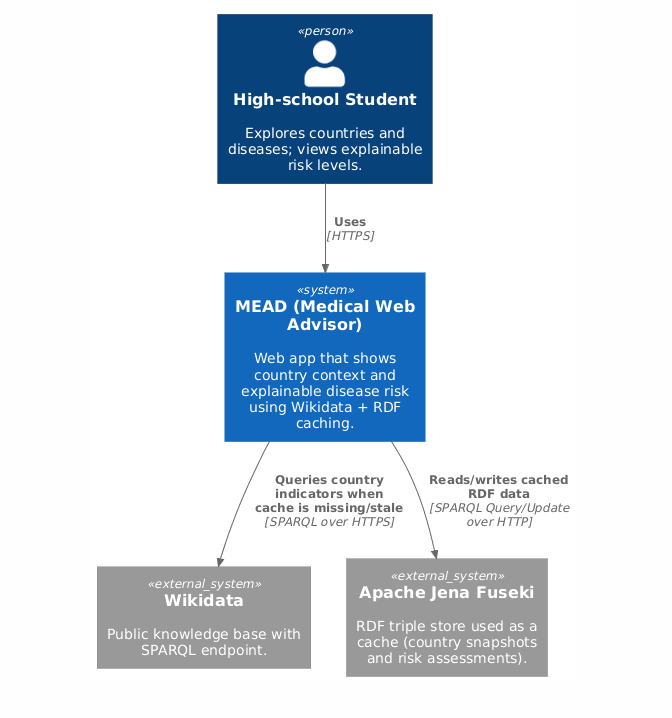
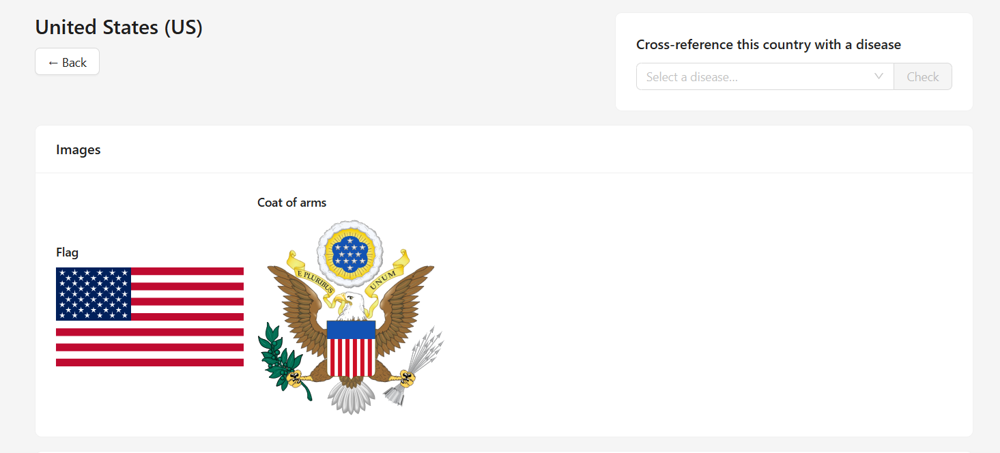
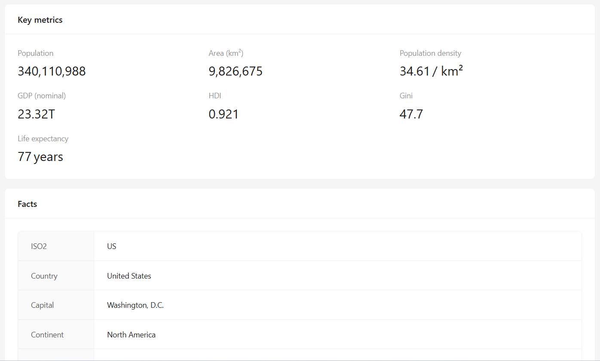
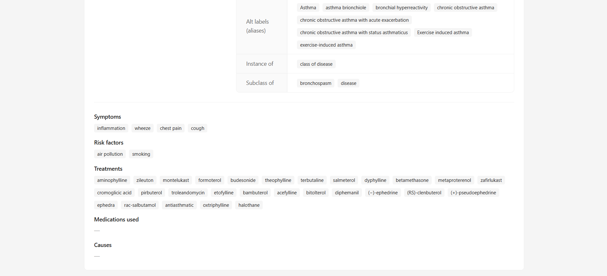
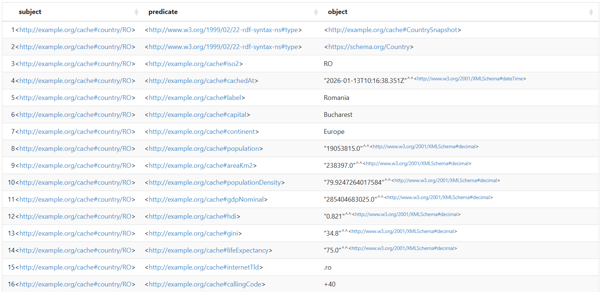
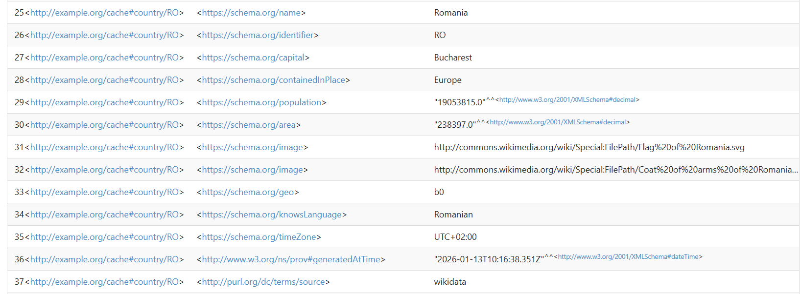

MEAD (Medical Web Advisor) is an educational web application developed
for the WADe course that helps users (high-school students) explore
countries, common conditions, and contextual factors that influence
disease prevalence. The system follows a service-oriented architecture
composed of independent backend services and a web-based frontend.
Country information is retrieved from external linked data sources
(Wikidata) and cached to reduce repeated queries. Disease information
is enriched using external data sources (Wikidata), while a dedicated
risk assessment service computes an explainable score and “why”
justification for a selected country-disease pair. Risk assessments
and additional semantic data are stored and queried using Apache Jena
Fuseki and SPARQL.
1. Introduction
MEAD (Medical Web Advisor) is an educational web application developed
during the WADe course. The goal of the project is to help users
(especially high-school students) explore how country specific factors
can be connected to common medical conditions and how such context can
influence disease risk.
The project is designed as a web system with a clear separation
between user-facing functionality and backend processing. Users
interact with MEAD through a browser-based interface that allows
selecting a country and a disease, then viewing a computed risk
assessment together with an explanation of the factors that
contributed to it.
From a software engineering perspective, MEAD uses a service-oriented
architecture. Distinct services handle country data retrieval, disease
information management, and risk assessment. This separation supports
scalability and makes the system easier to understand and extend.
MEAD also shows integration of external and semantic web resources.
Country information is obtained from external knowledge sources such
as Wikidata and cached to reduce repeated queries. In addition, the
system uses a semantic storage layer (Apache Jena Fuseki) to store
structured RDF data.
The rest of this report presents the system architecture, internal
data structures, API design, the use of RDF/SPARQL and the
conclusions.
2. System Architecture
MEAD is designed as a service-oriented web application. The
architecture follows common software engineering principles such as
modularity, loose coupling, and clear responsibility boundaries, while
remaining simple enough to support an educational use case.
2.1 Architectural Overview
At a high level, the system is composed of three main layers: a
web-based frontend, a set of backend services exposing REST APIs, and
a semantic storage layer implemented using Apache Jena Fuseki.
End users interact exclusively with the frontend. All data retrieval,
processing, and persistence are handled by backend services, which
communicate using HTTP and JSON. Semantic data is stored and queried
using RDF and SPARQL.
2.1.1 C4 Model - Level 1 (System Context)
Figure 1 presents the C4 Level 1 (System Context) view of MEAD.

Figure 1. C4 Level 1 (System Context): user interaction with MEAD
and external dependency on Wikidata.
2.2 Main Components and Responsibilities
Frontend
The frontend is a browser-based application responsible for user
interaction and data visualization. It allows users to explore
countries and diseases and to request a risk assessment for a
selected country-disease pair. The frontend does not contain
domain logic and relies entirely on backend REST APIs.
The frontend is intentionally designed to be as simple as
possible. All data processing, knowledge integration, caching, and
decision logic are handled server-side. This design choice
improves maintainability, simplifies the client implementation,
and ensures that domain logic remains centralized and consistent
across the system.
The user interface is organized into three main views, supported
by a set of reusable components:
Home Page
The home page provides the main entry point to the application.
It allows users to select a country (via ISO2 code or equivalent
selector) or a medical condition. This view focuses on guiding
the user toward exploring the available data rather than
presenting detailed information.
Figure 2. Main navigation of the MEAD frontend (example
screenshot).
Country / Condition View
This view displays detailed contextual information about a
selected country or a selected medical condition. For countries,
it presents demographic and socio-economic indicators such as
population, population density, GDP, HDI, Gini coefficient, and
life expectancy. For conditions, it presents descriptive
information including causes and risk factors. Data shown in
this view is retrieved from the geo-service and the
condition-service, respectively.

Figure 3. Example country snapshot for US

Figure 4. Example country snapshot for US
Figure 5. Example disease information view for asthma.

Figure 6. Example disease information view for asthma.
Risk Assessment View
The risk assessment view is the core visualization of the
system. It combines a selected country and a selected disease to
display an explainable risk level (low, medium, or high). In
addition to the final classification, the view presents a
numeric score, the contributing factors used in the assessment,
and a list of human-readable explanations describing why a
particular risk level was produced.
Figure 7. Example risk assessment output for US + asthma,
including explanation (“why”).
Reusable UI components such as country information cards, disease
description panels, risk badges, and explanation lists are used
across views to ensure consistency and reduce duplication.
Condition Service
The Condition Service manages information about diseases and
medical conditions supported by the system, those currently being
asthma, obesity and depression. The condition's data is resolved
against Wikidata when possible and stored as structured RDF
resources, including identifiers, descriptions, and related
medical facts (e.g., symptoms, risk factors, treatments).
Disease definitions are intentionally kept simple and are curated
manually to ensure clarity and consistency. Each condition is
described by a short textual description, a list of causes, and a
list of risk factors. While the primary source of this information
is internal, the service gets more info from the external data
source (Wikidata), such as symptoms, causes and treatment options.
This facilitates future integration with external biomedical
knowledge bases.
By persisting condition metadata in Fuseki, the system ensures
that disease concepts are treated as first-class semantic entities
rather than application-specific constants. This design choice
improves transparency and supports extensibility, for example by
allowing additional medical properties or links to external
vocabularies to be added later.
Geographical Service
The Geographical Service provides access to country-level
contextual data. Its primary responsibility is to retrieve and
cache geographic and socio-economic indicators for countries
identified by ISO2 codes. The service acts as the sole integration
point with external linked data sources, most notably Wikidata.
When a country is requested, the service first checks whether a
cached snapshot exists in the semantic storage layer. If the
snapshot is missing or older than a predefined freshness threshold
(30 days), the service queries the Wikidata SPARQL endpoint to
retrieve the relevant indicators. Retrieved data is then stored as
an RDF snapshot together with provenance metadata such as a
retrieval timestamp.
The Geographical Service exposes only country context data and
does not perform any disease-related computations. This strict
separation of concerns ensures that country data remains reusable
and independent of application-specific inference logic.
Risk Assessment Service
The Risk Assessment Service is the core application logic. It
combines country context and disease information, applies a
rule-based scoring mechanism, and generates an assessment
describing why a certain risk level was produced.
The service applies a rule-based scoring mechanism that uses
country-level indicators (e.g., population density, HDI, GDP,
inequality metrics) as proxies for environmental, socio-economic,
and healthcare-related factors. Each rule contributes a defined
number of points and a human-readable explanation when triggered.
The total score is mapped to a qualitative risk level (low,
medium, high).
Computed assessments are cached in the semantic storage layer as
RDF resources. Each assessment is linked to both the country and
the disease it concerns and includes metadata indicating which
version of the country snapshot was used. This allows the system
to automatically invalidate and recompute assessments when the
underlying country context changes.
By isolating all inference logic in this service, the architecture
enables scalable evolution of the risk model without affecting the
data retrieval or presentation layers.
Semantic Storage Layer (Apache Jena Fuseki)
Apache Jena Fuseki is used as the RDF-based persistence layer. It
stores cached country snapshots, disease-related semantic data,
and computed risk assessment results together with provenance
metadata. The storage layer supports SPARQL queries and enables
reuse, transparency, and extensibility.
Fuseki enables SPARQL-based querying and updating of stored data
and acts as a shared knowledge base for all backend services. The
use of RDF allows heterogeneous data (external country indicators,
internal disease knowledge, and computed assessments) to coexist
within a unified semantic model.
In addition to caching, the semantic storage layer supports
provenance, transparency, and explainability by storing
timestamps, links between resources, and explanation statements.
This design ensures that all computed results can be traced back
to their underlying data sources and assumptions.
2.2.1 C4 Model - Level 2 (Container Diagram)
Figure 2 presents the C4 Level 2 (Container) view of MEAD. It
highlights the web frontend, the three backend services (geo-service,
condition-service, risk-assessment-service), the semantic storage
layer (Apache Jena Fuseki), and the interaction with Wikidata for
external knowledge retrieval.
The workflow of the application is described below. It is intended to
be simple and information-oriented.
The user selects a country or a disease in the frontend interface.
The frontend sends a REST request to the appropriate service (either
Condition Service or Geographical Service).
The service provides the required information.
The user can then choose to make a risk assessment between a country
and a condition.
A new request is sent to the backend, this time to the Risk
Assessment Service.
The service computes a numeric score and a categorical risk level
and generates an explanation.
The assessment result is returned to the frontend and presented to
the user.
2.4 Input and Output Data Formats
Communication between components is based on RESTful APIs using JSON
for input and output data. All frontend-backend communication follows
a request-response pattern over HTTP, ensuring loose coupling between
components and clear interface boundaries.
JSON responses returned by the services expose normalized and
application-level data structures. For example, country snapshots are
returned as structured objects containing demographic and
socio-economic indicators, while risk assessment responses include
qualitative risk levels, numeric scores, and human-readable
explanations. This format is well suited for consumption by the
frontend and supports straightforward data visualization and error
handling.
Internally, the semantic storage layer represents data using the
Resource Description Framework (RDF). Apache Jena Fuseki stores
country snapshots, condition metadata, and risk assessment results as
RDF resources, each identified by stable URIs and enriched with
provenance information such as timestamps. RDF is used to manage
heterogeneous data originating from external sources, internal
knowledge definitions, and computed results within a unified model.
Interaction with the semantic storage layer is performed using SPARQL
queries and updates. SPARQL SELECT queries are used to retrieve cached
data and to evaluate freshness conditions, while SPARQL UPDATE
operations are used to persist refreshed snapshots and newly computed
risk assessments.
To formally document and standardize the REST interfaces exposed by
the backend services, the complete API is described using an OpenAPI
specification. This specification defines available endpoints, request
parameters, response schemas, and error formats, providing a
machine-readable contract for both frontend development and future
service integration.
3. Internal Data Structures and Models
MEAD manages data using two complementary representations: JSON-based
data transfer objects used by backend services and the frontend, and
RDF-based representations persisted in the semantic storage layer.
This dual representation allows the system to remain simple at the
application level while benefiting from structured semantic storage.
3.1 Application-Level Data Models (JSON)
Backend services exchange data using JSON structures over REST. These
structures are designed as lightweight and explicit models that
closely reflect the needs of the frontend interface.
Country Model
Country data represents a snapshot of contextual information retrieved
from external sources (e.g., Wikidata). The model includes
demographic, geographic, and socio-economic attributes.
Disease data includes both basic descriptive information and
references to external medical knowledge. Diseases are resolved to
Wikidata entities whenever possible and may include identifiers and
related medical facts.
Risk assessments represent computed knowledge produced by the system.
Each assessment links a country and a disease and provides both a
numeric score and an explainable justification.
{
"iso2": "RO",
"disease": "asthma",
"source": "refresh",
"cachedAt": "2026-01-12T20:23:48.420Z",
"countryCachedAt": "2026-01-12T20:23:46.979Z",
"level": "low",
"score": 3,
"why": [
"Moderate population density can indicate more urban exposure. (+1)",
"Higher GDP can proxy more industrial activity and emissions potential. (+1)",
"Higher life expectancy can correlate with stronger health systems and diagnosis rates. (+1)"
],
"usedSignals": {
"populationDensity": 79.9247264017584,
"gdpNominal": 285404683025,
"hdi": 0.821,
"gini": 34.8,
"lifeExpectancy": 75
}
}
3.2 Semantic Data Representation (RDF)
The RDF schema used by the application is implicitly defined by the
data insertion logic implemented in the backend services. RDF triples
are generated programmatically using helper functions that distinguish
between single-valued and multi-valued properties. Single-valued
attributes (e.g., population, HDI, score) are represented by at most
one triple per resource, while multi-valued attributes (e.g., risk
factors or explanation statements) are represented by multiple triples
sharing the same predicate.
The application models three main resource categories in RDF:
CountrySnapshot, Condition, and
RiskAssessment. Each resource is assigned a stable
URI derived from domain identifiers (ISO2 for countries and a small
controlled vocabulary for conditions). A minimal amount of alignment
with existing vocabularies is applied where it is natural and
beneficial (e.g., using schema:name for human-readable
labels). Provenance and freshness are captured using timestamps (e.g.,
c:cachedAt), which are used by the services to enforce
the 30-day caching policy.
The following example illustrates a cached country snapshot as stored
in Fuseki. The resource is identified by an application URI
(c:country/RO), typed as a country snapshot, and enriched
with basic descriptive attributes and a generation timestamp.

Figure 91. Screenshot of Apache Jena Fuseki showing RDF triples for
a cached condition snapshot.

Figure 10. Screenshot of Apache Jena Fuseki showing RDF triples for
a cached condition snapshot.
Similar RDF resources are used for conditions and risk assessments. In
particular, a risk assessment resource stores both the final
classification (score and low/medium/high level) and an explainability
trail via repeated
c:why statements. This ensures that computed results
remain transparent and queryable within the semantic storage layer.
3.3 Mapping Between JSON and RDF
JSON models are used for runtime communication between services and
the frontend, while RDF representations are used for persistence and
querying. When data is retrieved from Fuseki, RDF resources are mapped
back into JSON structures before being returned to the frontend.
This approach avoids exposing RDF complexity to the client while still
enabling semantic interoperability, caching of external data,
provenance tracking, and reuse of computed assessment results.
4. API Design and OpenAPI Specification
MEAD exposes a REST API split across three backend services: a
geo-service for country snapshots, a condition-service for disease
data, and a risk-assessment-service for computing and caching
explainable risk scores. Services communicate using HTTP and exchange
data in JSON format. The full contract is documented in an OpenAPI
specification included in the project repository.
4.1 Service Separation and Endpoint Overview
The API is designed around clear responsibilities and stable
resources. Country context is treated independently from disease
definitions, and risk assessment is computed by a dedicated service
that combines the two.
condition-service (port 4001) - provides supported
disease information used by the application.
GET /health
GET /conditions
GET /conditions/{key}
geo-service (port 4002) - provides country
indicators and handles cache refresh from external sources
(Wikidata) through the semantic storage layer.
GET /health
GET /geo/{iso2}
risk-assessment-service (port 4003) - computes an
explainable risk assessment for a country and a disease, using
cached country snapshots and persisting results in Fuseki.
GET /health
GET /risk/{iso2}/{disease}
4.2 OpenAPI Specification
The OpenAPI specification documents all endpoints across the three
services, including request parameters, response schemas, and error
conditions. It also defines the expected identifiers used by the
system, such as ISO2 country codes and condition keys (e.g.,
asthma, obesity, depression).
Since each service runs on a different base URL, the specification
declares multiple servers:
http://localhost:4001 (condition-service),
http://localhost:4002 (geo-service), and
http://localhost:4003 (risk-assessment-service). Each
service exposes GET /health for runtime checks.
4.3 Usage Examples
This section presents representative usage examples illustrating how
the REST API is consumed by the frontend and how the different
services interact to support the main user workflows.
The following example retrieves a cached country snapshot from the
geo-service. If the snapshot is missing or considered stale, the
service may refresh the data from Wikidata and update the semantic
cache accordingly.
GET http://localhost:4002/geo/US
The response includes the country identifier, the data source
(cache/refresh/wikidata), the cache timestamp, and a set of country
indicators that are later used by the risk assessment service.
The next example retrieves the list of supported diseases (conditions)
from the condition-service. This endpoint is typically used to
populate the disease selection interface in the frontend.
GET http://localhost:4001/conditions
The response contains an array of condition definitions, including a
short description, causes, and the risk factors considered by the
scoring logic.
[
{
"key": "asthma",
"name": "Asthma",
"short": "A chronic condition causing airway inflammation and breathing difficulty.",
"causes": [
"Genetic predisposition",
"Airway inflammation",
"Environmental triggers"
],
...
},
{
"key": "obesity",
"name": "Obesity",
"short": "Excess body fat that can increase risk of other health problems.",
"causes": [
"Calorie surplus over time",
"Diet quality",
"Low physical activity"
],
...
},
{
"key": "depression",
"name": "Depression",
"short": "A mood disorder causing persistent sadness and loss of interest.",
"causes": [
"Biological factors (brain chemistry)",
"Psychological factors",
"Social/environment stressors"]
...
}
]
When a specific condition is selected, the frontend can retrieve the
full information page using the condition key(name).
GET http://localhost:4001/conditions/asthma
Finally, the following example requests a risk assessment for a given
country-disease pair. The risk-assessment-service either returns a
cached assessment from the semantic store or recomputes it using the
latest country snapshot.
GET http://localhost:4003/risk/US/asthma
The response includes a numeric score, a categorical risk level, and a
list of human-readable explanation strings describing which rules were
triggered. Additional metadata indicates whether the result was served
from cache and which country snapshot was used.
{
"iso2": "US",
"disease": "asthma",
"source": "cache",
"cachedAt": "2026-01-12T21:30:23.702Z",
"countryCachedAt": "2026-01-12T21:28:40.483Z",
"level": "medium",
"score": 4,
"why": [
"Higher life expectancy can correlate with stronger health systems and diagnosis rates. (+1)",
"Extremely high GDP can proxy very high activity and emissions exposure. (+3)"
],
"usedSignals": {
"populationDensity": 34.6109938509211,
"gdpNominal": 23315080560000,
"hdi": 0.921,
"gini": 47.7,
"lifeExpectancy": 77
}
}
4.4 Pragmatic Case Studies
Case Study A: Exploring Country Context
A user selects a country in the frontend. The frontend requests
GET /geo/{iso2} from the geo-service to obtain a current
snapshot of indicators (population, density, GDP, etc.) or a fresh
version of the data.
Case Study B: Explainable Risk for a Country-Disease Pair
A user selects a disease (e.g., asthma) and requests an assessment for
a country (e.g., US). The frontend requests
GET /risk/{iso2}/{disease}. The risk-assessment-service
computes the score using the country snapshot and returns both the
resulting level and an explanation list (why).
Case Study C: Browsing Supported Diseases
To show disease information in the user interface, the frontend calls
GET /conditions/{key} on the condition-service to obtain
a short description and lists of causes and risk factors.
5. RDF-Based Semantic Storage and Knowledge Representation
MEAD uses an RDF-based semantic storage layer implemented with Apache
Jena Fuseki. The purpose of this layer is to provide structured
persistence, semantic interoperability, and explainability for both
external knowledge and computed results.
5.1 Disease and Condition Knowledge
Diseases and medical conditions are represented as semantic snapshots
resolved to Wikidata entities whenever possible. For each condition,
the system stores identifiers (ICD-10, ICD-11, MeSH, UMLS), textual
descriptions, alternative labels, and a set of related medical facts
such as symptoms, risk factors, treatments, medications, and causes.
Related entities are stored as linked RDF resources that preserve
their original Wikidata URI, optional QID and a human-readable label.
This approach maintains semantic links to external knowledge bases
while remaining lightweight and application-driven.
5.2 Country Snapshots and External Knowledge Caching
Country-related information is retrieved from Wikidata and stored in
Fuseki as cached RDF snapshots. Each country is represented as a
resource identified by its ISO code. The stored data includes
demographic, geographic, and socio-economic attributes, together with
a timestamp indicating when the snapshot was generated.
In addition to a project-specific vocabulary, selected properties are
aligned with
schema.org (e.g.,
schema:Country, schema:population) and
enriched with provenance metadata using
prov:generatedAtTime and dcterms:source.
5.3 Risk Assessment Results as Semantic Data
Computed risk assessments are also stored in the semantic layer. Each
assessment is represented as an RDF resource linked to both the
corresponding country and disease. The stored data includes a numeric
score, a categorical risk level, and a list of explanatory statements
describing why the score was produced.
5.4 Querying with SPARQL
All stored RDF data can be accessed using SPARQL queries. Queries are
used both for retrieving cached knowledge and for checking the
freshness of stored assessments before recomputation, ensuring
efficient reuse of previously computed results.
6. External Data Sources and Linked Data Principles
MEAD integrates external data and semantic web technologies in a
pragmatic manner, focusing on reuse of existing knowledge bases rather
than the construction of a custom medical ontology. The primary
external data source used by the system is Wikidata, which provides
structured and interlinked information about countries and diseases.
6.1 Use of External Knowledge Sources
Disease and condition information is also resolved against Wikidata
entities whenever possible.
Country-related data is retrieved from Wikidata using SPARQL queries
and stored as cached snapshots in the semantic storage layer. This
data includes demographic, geographic, and socio-economic indicators
such as population density, GDP, and life expectancy. Caching these
snapshots in Fuseki reduces repeated external requests and ensures
consistent use of country context across the system.
6.2 SPARQL Usage
SPARQL is used both for querying external knowledge sources and for
retrieving data stored in the local semantic storage layer. Queries
are used to check for the existence and freshness of cached data, to
retrieve disease-related information, and to reuse previously computed
risk assessments.
The following example illustrates a SPARQL query used to retrieve a
cached country snapshot from the local Fuseki store:
The system follows core linked data principles by reusing stable URIs
provided by Wikidata, representing knowledge using RDF, and enabling
access to stored data via SPARQL endpoints.
While MEAD does not perform ontology-based inference, its use of RDF,
external identifiers, and SPARQL querying demonstrates a practical
application of linked data concepts within a service-oriented web
application.
Conclusion
This report presents the design and implementation of MEAD (Medical
Web Advisor), an educational web application developed as part of the
WADe course. The project demonstrates how a service-oriented
architecture can be combined with external linked data sources and
semantic technologies to build a modular web system.
From a software engineering perspective, MEAD separates
responsibilities across independent services responsible for country
data retrieval, disease information management, and risk assessment.
This design improves maintainability and allows individual components
to evolve independently while exposing a REST API to the frontend.
The integration of Apache Jena Fuseki as an RDF-based storage layer
enables structured persistence of external knowledge and computed
assessment results. By representing selected data as RDF and querying
it using SPARQL, the system supports transparency, reuse of computed
results, and alignment with linked data principles without adding
unnecessary complexity to the client-side application.
MEAD is intentionally designed as an educational and exploratory tool
rather than a clinical decision system. Simplified models and
rule-based assessments are used to prioritize explainability and
accessibility for non-expert users, particularly students. Future work
may extend the system with additional data sources, richer semantic
models, and more advanced analysis techniques.
Overall, the project illustrates a pragmatic application of web
technologies, RESTful APIs, and semantic data management within a
modern web application.